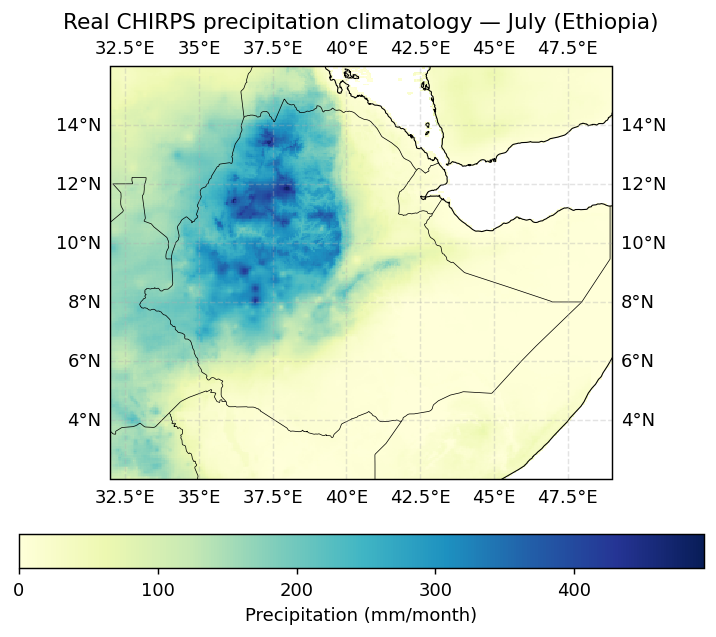
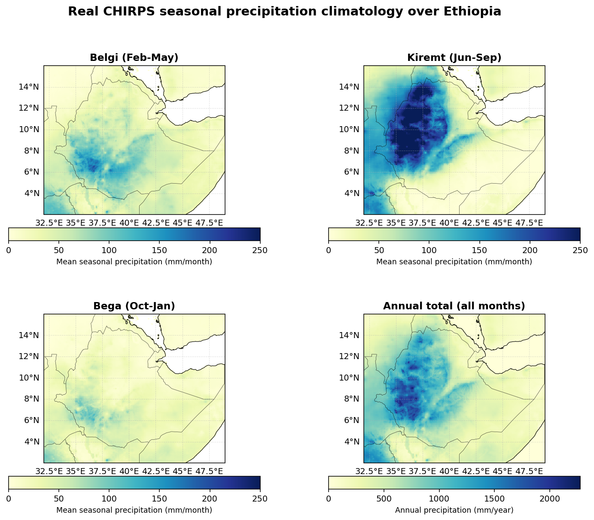

Module 8: Spatial Operators#
Learning Objectives#
After completing this module, you will be able to:
Extract spatial subsets using coordinate boxes and grid indices
Remap data between different grid types and resolutions
Describe, set, and manipulate grids
Compute spatial statistics (field means, maxima, etc.)
Work with different grid types (regular, Gaussian, reduced, curvilinear, unstructured)
Perform area-weighted statistics
Prerequisites#
This module assumes you have completed Modules 1-7 or are familiar with basic CDO commands and have a working NetCDF file with spatial dimensions (latitude/longitude).
Note
You will need a global or regional dataset with latitude and longitude coordinates for the examples in this module. A global temperature or precipitation field works well. Sample files are available from the course data repository.

Fig. 3 Real CHIRPS precipitation climatology for Ethiopia, used by the spatial and climate-index examples in this course.#

Fig. 4 Seasonal precipitation climatology over Ethiopia derived from the same real CHIRPS dataset: Belgi, Kiremt, Bega, and annual total. Regional subsetting and remapping of these fields is demonstrated in the examples below.#
8.1 Spatial Domain Operations#
Spatial domain operators subset data by geographical region or grid index.
8.1.1 Selecting by Latitude/Longitude Box#
The sellonlatbox operator extracts a rectangular region:
cdo sellonlatbox,-10,40,30,70 europe.nc global.nc
The syntax is sellonlatbox,x1,x2,y1,y2 where:
x1= western longitude boundaryx2= eastern longitude boundaryy1= southern latitude boundaryy2= northern latitude boundary
Tip
For global data spanning 0-360°E, use longitudes in the 0-360 convention. For -180 to 180°E, use negative values for western longitudes.
8.1.2 Regions of Interest#
# Tropical band
cdo sellonlatbox,-180,180,-30,30 tropics.nc global.nc
# Europe
cdo sellonlatbox,-10,40,30,70 europe.nc global.nc
# Africa
cdo sellonlatbox,-20,55,-35,38 africa.nc global.nc
# South America
cdo sellonlatbox,-85,-30,-60,15 south_america.nc global.nc
# Southeast Asia
cdo sellonlatbox,90,150,-15,30 se_asia.nc global.nc
Warning
sellonlatbox preserves the original grid structure but reduces the grid dimensions. It does not remap or interpolate — it simply crops.
8.1.3 Selecting by Grid Index Box#
When you know the grid indices rather than coordinates:
cdo selindexbox,10,50,20,60 indonesia_subset.nc global.nc
The syntax is selindexbox,ilon1,ilon2,ilat1,ilat2 — all 1-indexed.
Note
selindexbox is faster than sellonlatbox because it avoids coordinate lookups. It is useful in automated scripts where grid indices are known in advance.
8.1.4 Selecting Specific Grid#
cdo selgrid,1 multi_grid_file.nc grid1.nc
cdo selgrid,2 multi_grid_file.nc grid2.nc
This is useful for data stored on multiple grids (e.g., output from models with different parameterizations on different grids).
8.1.5 Subsampling#
cdo samplegrid,2 global.nc every_other.nc # keep every 2nd grid cell
cdo samplegrid,4 global.nc coarse.nc # keep every 4th grid cell
Exercise 68
Extract the Horn of Africa region (32-52°E, 5°S-15°N) from a global precipitation dataset.
Solution to Exercise 68
cdo sellonlatbox,32,52,-5,15 horn_of_africa.nc global_precip.nc
cdo info horn_of_africa.nc
8.2 Remapping and Regridding#
Remapping (regridding) transfers data from one grid to another. This is essential when comparing or combining datasets on different grids.
8.2.1 Bilinear Interpolation#
cdo remapbil,target_grid.nc source.nc remapped.nc
cdo remapbil,r144x72 source.nc remapped.nc # to regular 144x72 grid
Tip
Bilinear interpolation is fast and works well for smooth fields like temperature. It is less suitable for precipitation where values can change abruptly.
8.2.2 Bicubic Interpolation#
cdo remapbic,target_grid.nc source.nc bicubic.nc
Bicubic interpolation uses 16 surrounding grid points and produces smoother results than bilinear, but can overshoot in regions with sharp gradients.
8.2.3 Conservative Interpolation#
First-order conservative:
cdo remapcon,target_grid.nc source.nc conservative.nc
Second-order conservative:
cdo remapcon2,target_grid.nc source.nc conservative2.nc
Warning
Conservative remapping preserves area integrals (e.g., total precipitation, energy fluxes). It is the preferred method for precipitation and flux variables. It requires that the source and target grid cell areas can be computed.
8.2.4 Distance-Weighted Interpolation#
cdo remapdis,target_grid.nc source.nc distance_weighted.nc
8.2.5 Nearest Neighbor#
cdo remapnn,target_grid.nc source.nc nearest.nc
Nearest neighbor preserves original values and is ideal for categorical data (e.g., land-sea masks, vegetation types).
8.2.6 Remapping Methods Comparison Table#
Method |
Operator |
Best For |
Conservation |
|---|---|---|---|
Bilinear |
|
Smooth fields (T, Z, pressure) |
No |
Bicubic |
|
Very smooth fields |
No |
Conservative |
|
Fluxes, precipitation |
Yes (1st order) |
Conservative2 |
|
Fluxes (higher accuracy) |
Yes (2nd order) |
Distance |
|
General purpose |
No |
Nearest |
|
Categorical, binary fields |
No |
8.2.7 Generating Interpolation Weights#
For repeated remapping operations, precompute weights to save time:
cdo genbil,target_grid.nc source.nc weights_bil.nc
cdo gencon,target_grid.nc source.nc weights_con.nc
cdo genbic,target_grid.nc source.nc weights_bic.nc
cdo gendis,target_grid.nc source.nc weights_dis.nc
cdo gennn,target_grid.nc source.nc weights_nn.nc
Apply precomputed weights:
cdo remap,target_grid.nc,weights_bil.nc source.nc remapped.nc
Tip
When remapping many files to the same target grid (e.g., multiple CMIP6 models), generate weights once and reuse them for all files. This can reduce processing time by 50-80%.
8.2.8 Target Grid Specification#
Target grids can be specified in several ways:
# From an existing file
cdo remapbil,reference_grid.nc input.nc output.nc
# Regular grid using resolution string
cdo remapbil,r360x180 input.nc output.nc # 1° x 1°
cdo remapbil,r720x360 input.nc output.nc # 0.5° x 0.5°
cdo remapbil,r1440x720 input.nc output.nc # 0.25° x 0.25°
# Using grid description file
cdo remapbil,mytargetgrid input.nc output.nc
The rNXxNY format defines a regular lon-lat grid with NX longitude points and NY latitude points.
Exercise 69
Remap a global 0.25° dataset to a 1° x 1° regular grid using conservative remapping. Compare the file sizes and total precipitation sums.
Solution to Exercise 69
cdo remapcon,r360x180 highres.nc lowres.nc
cdo info highres.nc | find "precip"
cdo info lowres.nc | find "precip"
cdo fldsum -timsum highres.nc total_high.nc
cdo fldsum -timsum lowres.nc total_low.nc
Conservative remapping should approximately preserve the total precipitation.
8.3 Grid Operations#
These operators describe, set, and manipulate grids.
8.3.1 Describing Grids#
cdo griddes temperature.nc
This outputs a complete grid description including the number of grid points, grid type, and coordinate bounds.
cdo gridtype temperature.nc # grid type (regular, curvilinear, etc.)
cdo nlon temperature.nc # number of longitudes
cdo nlat temperature.nc # number of latitudes
cdo nlevel temperature.nc # number of vertical levels
cdo npoints temperature.nc # total number of grid points
cdo gridarea temperature.nc # compute grid cell areas
8.3.2 Setting Grids#
cdo setgrid,newgridfile.nc data.nc data_with_grid.nc
cdo setgridtype,curvilinear data.nc curvilinear.nc
Warning
Setting a grid with incorrect parameters can silently corrupt spatial coordinates. Always verify with cdo griddes after setting.
8.3.3 Grid Cell Areas#
cdo gridarea temperature.nc cell_areas.nc
cdo fldsum cell_areas.nc total_area.nc
cdo output -fldsum cell_areas.nc
Grid cell areas vary significantly with latitude. Cells near the equator are much larger than cells near the poles on regular lat-lon grids.
Tip
Grid cell areas are essential for correct flux calculations. Always use cdo gridarea rather than assuming constant cell size.
8.3.4 Grid Editing#
cdo setx,lonitude.nc temperature.nc # set new longitude values
cdo sety,latitude.nc temperature.nc # set new latitude values
cdo setgridtype,regular temperature.nc regular.nc
8.4 Spatial Statistics#
Spatial statistics reduce the spatial dimensions (lat/lon) to produce a single value per time step.
8.4.1 Field Mean (Spatial Average)#
cdo fldmean temperature.nc global_mean.nc
Warning
fldmean computes a simple arithmetic mean over all grid cells. For proper area-weighted averaging, use cdo fldmean with area weights or use areaavg.
Comparison of spatial mean types:
cdo fldmean temperature.nc simple_mean.nc # arithmetic mean
cdo areaavg temperature.nc area_weighted_mean.nc # area-weighted mean
cdo fldmean -gridarea temperature.nc weighted.nc # manual weighting
8.4.2 Other Field Statistics#
cdo fldmax temperature.nc max_per_timestep.nc # maximum at each time
cdo fldmin temperature.nc min_per_timestep.nc # minimum at each time
cdo fldstd temperature.nc std_per_timestep.nc # spatial standard deviation
cdo fldvar temperature.nc var_per_timestep.nc # spatial variance
cdo fldsum temperature.nc sum_per_timestep.nc # sum over all cells
cdo fldrange temperature.nc range_per_timestep.nc # max-min
cdo fldmedian temperature.nc median_per_timestep.nc # median
8.4.3 Tropical Mean Example#
Combine spatial subsetting with field statistics:
cdo fldmean -sellonlatbox,-180,180,-30,30 temperature.nc tropical_mean.nc
cdo output tropical_mean.nc
8.4.4 Zonal Statistics#
cdo zonmean temperature.nc zonal_mean.nc # mean along each latitude band
cdo zonmax temperature.nc zonal_max.nc
cdo zonmin temperature.nc zonal_min.nc
cdo zonstd temperature.nc zonal_std.nc
cdo zonsum temperature.nc zonal_sum.nc
Zonal means are useful for examining the latitudinal structure of climate fields.
Note
zonmean averages across all longitudes at each latitude, producing a 1D (lat, time) field from a 2D (lon, lat, time) field.
8.4.5 Meridional Statistics#
cdo mermean temperature.nc meridional_mean.nc
8.5 Grid Types and Conversion#
Climate data comes in many grid types. CDO can handle all major formats.
8.5.1 Regular Lat-Lon Grid#
The simplest grid — equally spaced latitude/longitude grid cells.
cdo griddes regular_grid.nc
gridtype = lonlat
xsize = 144
ysize = 72
xfirst = 0
xinc = 2.5
yfirst = -88.75
yinc = 2.5
8.5.2 Gaussian Grid#
Used by many atmospheric models (ECMWF, NCEP). Latitude spacing is non-uniform with higher resolution near the equator.
cdo griddes gaussian_grid.nc
gridtype = gaussian
xsize = 256
ysize = 128
yfirst = -88.927...
yinc = variable (Gaussian latitudes)
8.5.3 Reduced Gaussian Grid#
A Gaussian grid with fewer longitude points near the poles. This is more computationally efficient.
cdo griddes reduced_gaussian.nc
Warning
Reduced Gaussian grids require special handling. Not all operators support them. Consider remapping to a regular grid first.
8.5.4 Curvilinear Grid#
Grid cells are not aligned with lines of constant latitude/longitude. Common in regional climate models.
cdo griddes curvilinear.nc
8.5.5 Unstructured Grid#
Grid cells have no regular structure. Common in ocean models (MPAS, FESOM) and some newer atmospheric models.
cdo griddes unstructured.nc
8.5.6 Converting Grid Types#
Convert reduced Gaussian to regular grid:
cdo remapbil,r360x180 reduced_gaussian.nc regular.nc
Convert curvilinear to regular:
cdo remapbil,regular_target.nc curvilinear.nc regular.nc
Tip
For conversions involving unstructured grids, you may need to provide additional grid information. Use cdo griddes on your source file to understand its structure before attempting remapping.
8.6 Area Operations#
Area-weighted statistics account for varying grid cell sizes.
8.6.1 Area-Weighted Average#
cdo areaavg temperature.nc area_avg.nc
This is the same as computing grid cell areas and using them as weights in a weighted average.
8.6.2 Other Area Operators#
cdo areamax temperature.nc area_max.nc
cdo areamin temperature.nc area_min.nc
cdo areastd temperature.nc area_std.nc
cdo areasum temperature.nc area_sum.nc
Note
The area* operators internally compute grid cell areas. They are generally preferred over fld* operators for climate applications where grid cell size varies.
8.6.3 Manual Area Weighting#
For full control:
cdo gridarea temperature.nc areas.nc
cdo fldmean -mul temperature.nc areas.nc weighted_mean.nc
8.7 Practical Workflow Examples#
8.7.1 Regional Climate Extraction#
Extract and analyze a region from global data:
cdo sellonlatbox,32,52,-5,15 precip.nc horn_africa.nc
cdo yearmon -fldmean horn_africa.nc annual_precip_horn.nc
cdo output annual_precip_horn.nc
8.7.2 Multi-Model Regridding#
Regrid multiple models to a common 1° x 1° grid:
# Generate weights once
cdo genbil,r360x180 model1.nc weights.nc
# Apply to all models
for model in model1.nc model2.nc model3.nc model4.nc; do
cdo remap,r360x180,weights.nc "$model" "regridded_$model"
done
8.7.3 Global Mean Time Series#
cdo output -fldmean -sellonlatbox,-180,180,-60,60 temperature.nc
8.7.4 Regional Masks#
Create a mask for a region and apply it:
# Create mask (1 for region, 0 elsewhere)
cdo setctomiss,0 -sellonlatbox,32,52,-5,15 global.nc mask.nc
cdo setmissval,1 -eqc,1 mask.nc
# Apply mask to data
cdo mul region_mask.nc original_data.nc masked_data.nc
Exercise 70
Create a mask for the Nile Basin region and compute area-weighted average precipitation over the basin.
Solution to Exercise 70
# Approximate Nile Basin bounding box (extension assumed from course data)
cdo sellonlatbox,28,42,-5,25 precip.nc nile_basin.nc
cdo areaavg nile_basin.nc nile_avg_precip.nc
cdo output nile_avg_precip.nc
8.8 Hands-On Exercises#
Exercise 8.1: Crop and Analyze a Region#
Exercise 71
From a global temperature dataset:
Extract the Mediterranean region (10°W-40°E, 30°N-50°N)
Compute the area-weighted mean temperature
Compute the spatial standard deviation
Identify the warmest and coldest grid points in the region
Solution to Exercise 71
cdo sellonlatbox,-10,40,30,50 global_temp.nc mediterranean.nc
cdo areaavg mediterranean.nc mediterranean_mean.nc
cdo areastd mediterranean.nc mediterranean_std.nc
cdo fldmax mediterranean.nc warmest.nc
cdo fldmin mediterranean.nc coldest.nc
Exercise 8.2: Regridding Between Resolutions#
Exercise 72
Remap a 0.25° dataset to 1° using bilinear interpolation
Remap the same dataset to 1° using conservative interpolation
Compare the two results — how do they differ near coastlines?
Solution to Exercise 72
cdo remapbil,r360x180 highres.nc bilinear_1deg.nc
cdo remapcon,r360x180 highres.nc conservative_1deg.nc
cdo sub bilinear_1deg.nc conservative_1deg.nc difference.nc
cdo fldmean -abs difference.nc mean_abs_diff.nc
Conservative remapping better preserves gradients near coastlines, while bilinear may smooth them. The absolute difference field highlights regions of largest discrepancy.
Exercise 8.3: Regional Average Computation#
Exercise 73
Compute the area-weighted average precipitation for:
The Amazon basin (approximate: 80°W-50°W, 20°S-5°N)
The Congo basin (10°E-30°E, 10°S-5°N)
Southeast Asia (90°E-150°E, 15°S-15°N) Compare the seasonal cycles.
Solution to Exercise 73
cdo areaavg -sellonlatbox,-80,-50,-20,5 global_precip.nc amazon.nc
cdo areaavg -sellonlatbox,10,30,-10,5 global_precip.nc congo.nc
cdo areaavg -sellonlatbox,90,150,-15,15 global_precip.nc seasia.nc
# Compute monthly climatology for each
cdo ymonmean amazon.nc amazon_clim.nc
cdo ymonmean congo.nc congo_clim.nc
cdo ymonmean seasia.nc seasia_clim.nc
# Output for comparison
cdo output amazon_clim.nc
cdo output congo_clim.nc
cdo output seasia_clim.nc
Exercise 8.4: Multi-Model Remapping#
Exercise 74
Given three CMIP6 model files on different grids, remap all three to a common 2° x 2° grid and compute the ensemble mean.
Solution to Exercise 74
TARGET="r180x90"
cdo remapbil,$TARGET model_A.nc model_A_r.nc
cdo remapbil,$TARGET model_B.nc model_B_r.nc
cdo remapbil,$TARGET model_C.nc model_C_r.nc
cdo ensmean model_A_r.nc model_B_r.nc model_C_r.nc ensemble_mean.nc
Exercise 8.5: Global Mean Temperature#
Exercise 75
Compute the global mean surface temperature (GMST) from ERA5 data for 1981-2010. Compare the area-weighted mean with the simple arithmetic mean. How large is the difference?
Solution to Exercise 75
# Simple mean
cdo fldmean -timmean era5_t2m.nc simple_gmst.nc
cdo output simple_gmst.nc
# Area-weighted mean
cdo areaavg -timmean era5_t2m.nc weighted_gmst.nc
cdo output weighted_gmst.nc
# Difference
cdo sub simple_gmst.nc weighted_gmst.nc diff.nc
cdo output diff.nc
The difference is typically 1-3 K because polar regions (with small grid cells) have different temperatures than equatorial regions (with large grid cells). The area-weighted mean is more physically correct.
8.9 Quiz#
Exercise 76 (Question 1)
What does cdo sellonlatbox,-10,40,30,70 global.nc do?
a) Selects longitudes 30-70 and latitudes -10 to 40 b) Selects longitudes -10 to 40 and latitudes 30 to 70 c) Cuts the file to have exactly 10 longitude and 40 latitude points d) Remaps the data to a 10x40 degree grid
Solution to Exercise 76 (Question 1)
The correct answer is b. The syntax is sellonlatbox,x1,x2,y1,y2 representing western, eastern, southern, and northern boundaries. So -10°W to 40°E and 30°N to 70°N (Europe region).
Exercise 77 (Question 2)
Which remapping method should be used for precipitation data when conservation of total mass is required?
a) remapbil — bilinear interpolation
b) remapbic — bicubic interpolation
c) remapcon — conservative interpolation
d) remapnn — nearest neighbor
Solution to Exercise 77 (Question 2)
The correct answer is c. Conservative interpolation (remapcon) preserves area integrals, ensuring that the total precipitation amount is conserved when moving between grids. Bilinear and bicubic methods do not conserve mass.
Exercise 78 (Question 3)
What is the primary difference between cdo fldmean and cdo areaavg?
a) fldmean works on fields, areaavg works on areas
b) areaavg computes an area-weighted mean, fldmean computes a simple arithmetic mean
c) fldmean computes means faster
d) There is no difference — they are aliases
Solution to Exercise 78 (Question 3)
The correct answer is b. cdo areaavg weights each grid cell by its area (which varies with latitude on regular grids), while cdo fldmean treats all grid cells equally. For proper climate analysis, areaavg is preferred.
Exercise 79 (Question 4)
What is a reduced Gaussian grid?
a) A grid with the same number of points at all latitudes b) A Gaussian grid with fewer longitude points near the poles c) A regular grid at reduced (lower) resolution d) A grid that has been compressed using lossy compression
Solution to Exercise 79 (Question 4)
The correct answer is b. In a reduced Gaussian grid, the number of longitude points decreases toward the poles, where meridians converge. This reduces computational cost without significant loss of accuracy.
Exercise 80 (Question 5)
Why would you generate remapping weights with cdo genbil before using cdo remapbil?
a) Weights are required — remapbil will not work without them
b) To save time when remapping many files to the same target grid
c) To improve the accuracy of the interpolation
d) Weights are only needed for conservative remapping
Solution to Exercise 80 (Question 5)
The correct answer is b. Precomputing weights with genbil (or gencon, etc.) saves the weight calculation step for each remapping operation. When remapping 50 model outputs to the same grid, generating weights once and applying them 50 times can reduce total processing time by more than half.
Summary#
In this module, you learned:
Spatial subsetting:
sellonlatbox,selindexbox,selgridextract regions by coordinates or indicesRemapping:
remapbil,remapbic,remapcon,remapcon2,remapdis,remapnntransfer data between grids with different characteristicsWeight generation:
genbil,genconprecompute remapping weights for efficient batch processingGrid operations:
griddes,gridarea,setgrid,setgridtypemanage grid metadataSpatial statistics:
fldmean,fldmax,fldmin,fldstd,fldvar,fldsumreduce spatial dimensionsArea-weighted statistics:
areaavg,areamax,areamin,areastd,areasumaccount for varying grid cell sizesGrid types: Regular lat-lon, Gaussian, reduced Gaussian, curvilinear, and unstructured grids
Tip
Remapping is one of the most common yet computationally expensive CDO operations. Always precompute weights when processing multiple files, and choose the remapping method that is appropriate for your variable type (conservative for fluxes, bilinear for smooth fields, nearest neighbor for categories).
Proceed to Module 9 to learn about statistical operators for climate data analysis.